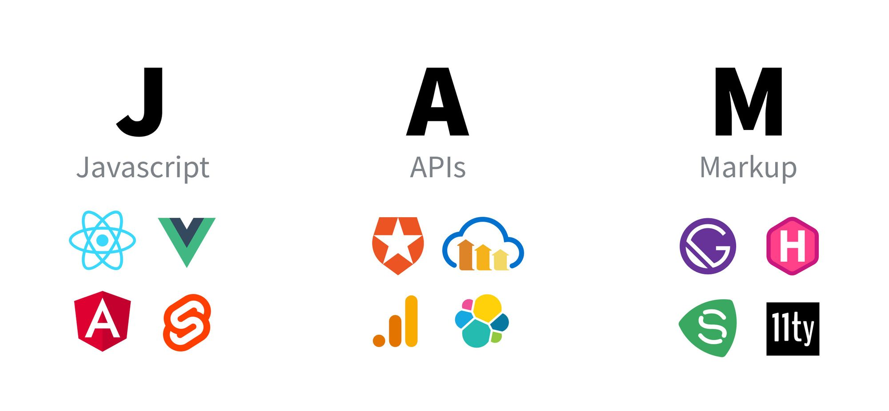

What is the JAMStack?
A JAMStack is a site that pre-renders all the files for you using JavaScript and don’t necessarily depend on a web server to run. Most of these sites are built custom-made, and there are many like JAMStack.
Here are a few that can get the work done.
Break Down of what JAM meansFor those who have seen the Earth from space, and for the hundreds and perhaps thousands more who will, the experience most certainly changes your perspective. The things that we share in our world are far more valuable than those which divide us.
Why is it an important tool in web development?
Tools like JAMStack and others like it can be a important tool in web development beacuse it will improve Faster development, Better and higher security, and Better performance because files are pre-rendered.
Developers can also use pre-rendering tools for any projects that they are assined to do and there is so much now days that need to be displayed fast and quick.
For my blog I used JAMStack and a modifided a basic theme they had that worked for my blog, and then hosted the project with Netlify for free.
I used JAMStack because it was one of the most used ones that I knew of... However there is other easier ones that I would have switch to know looking at their documentation like Jekyll.